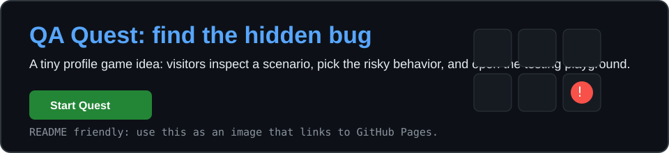
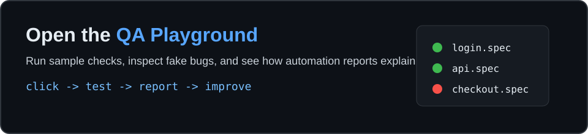
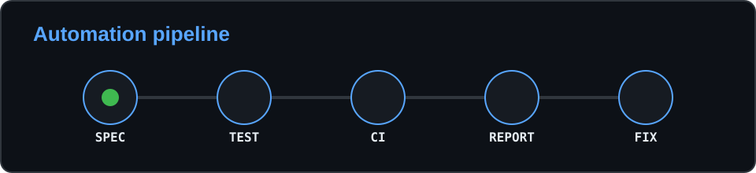

1. Mini Game Mode
Visitors click tiles to find the risky behavior. In a real README, this card links to GitHub Pages because GitHub READMEs do not run JavaScript.
Pick the hidden bug.
Eight complete directions you can try before choosing what belongs in the real GitHub profile.
Visitors click tiles to find the risky behavior. In a real README, this card links to GitHub Pages because GitHub READMEs do not run JavaScript.
Pick the hidden bug.
Animated snake over your public contribution graph. Cool, but common. Best if customized with your own colors.

README version uses Platane/snk output SVG.
A compact visual that shows your testing judgment.

Short challenge table that points visitors to testing examples.
| Scenario | Hint |
|---|---|
| Invalid email accepted | Validation boundary |
| Weak API assertion | Missing behavior check |
| Flaky UI test | Timing dependency |
A real hosted mini playground where visitors can run fake tests and inspect reports.

Professional and on-brand: spec, test, CI, report, fix.

Simple, readable, and very QA-flavored.
| Check | Status |
|---|---|
| Test automation | PASS |
| API testing | PASS |
| CI/CD workflows | PASS |
| New ideas | IN PROGRESS |
Clean action buttons instead of a long collaboration section.